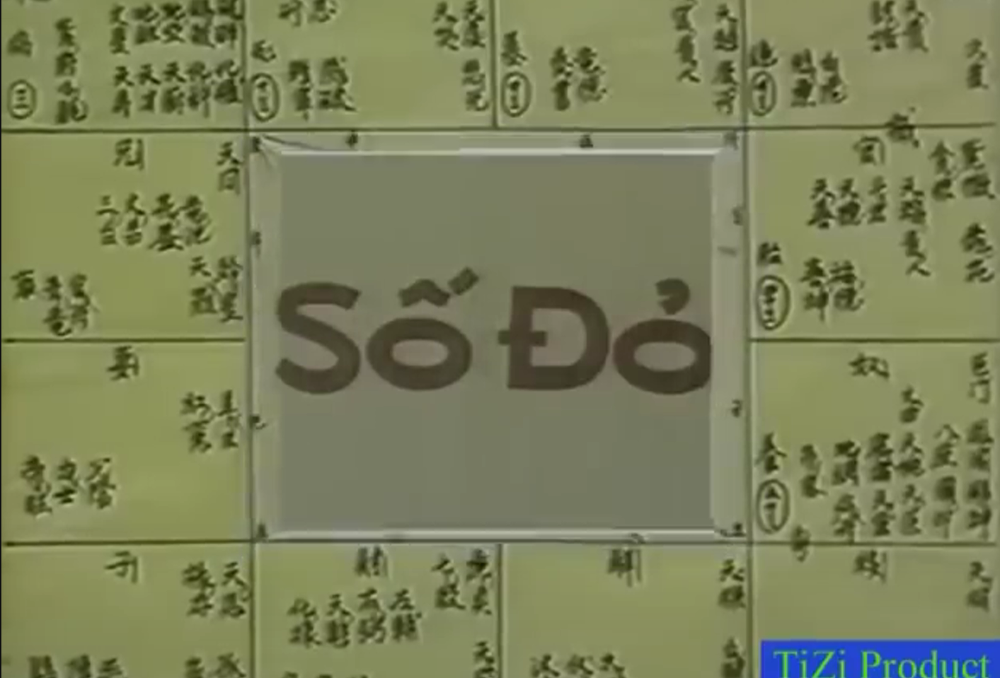
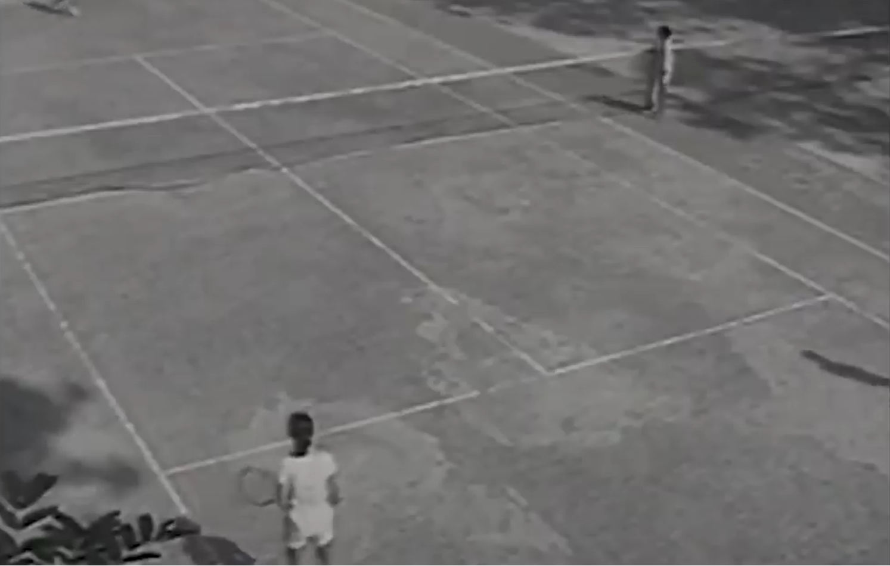
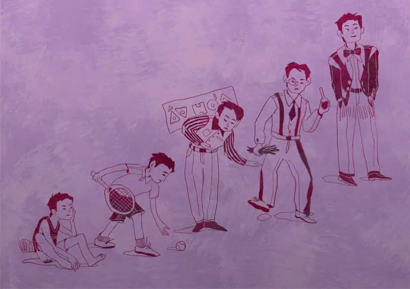
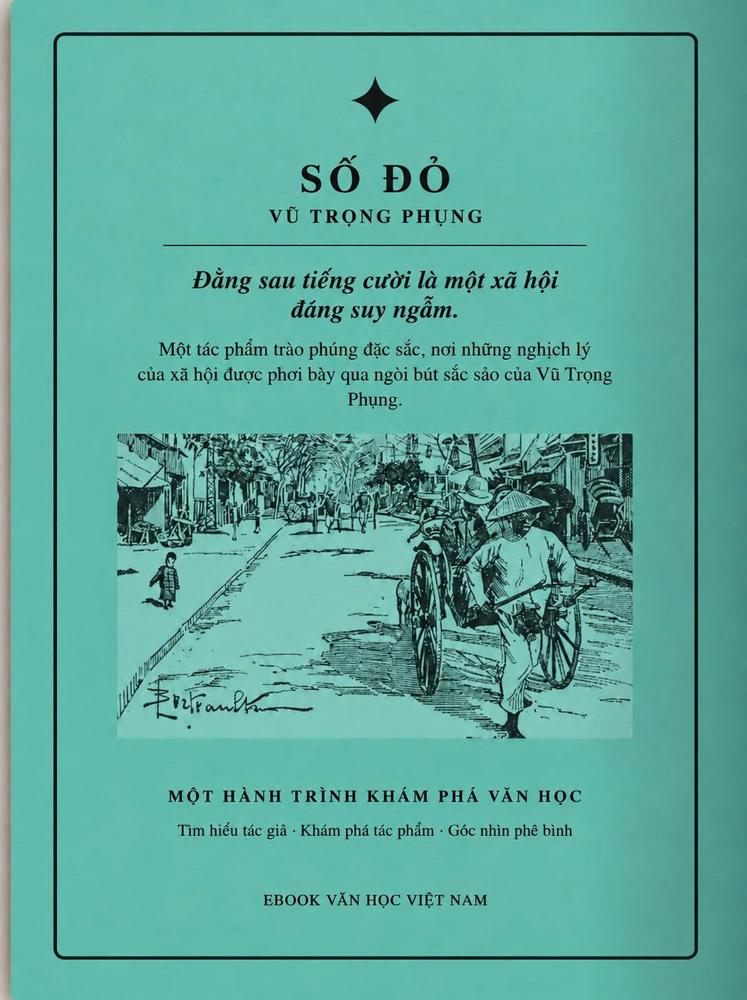

Nguồn: YTB: Jos. Phong Pham

Nguồn: YTB: Anh Kiệt Đọc Sách
Nhấn vào mục để nhảy nhanh tới trang.
Tác phẩm tiêu biểu: Chỉ trong gần 10 năm cầm bút, ông để lại gia tài đồ sộ: tiểu thuyết (Số đỏ, Giông tố, Vỡ đê), phóng sự (Kỹ nghệ lấy Tây, Cạm bẫy người, Cơm thầy cơm cô), truyện ngắn và kịch.
Phong cách: Ngòi bút hiện thực sắc sảo, phơi bày trần trụi mặt trái xã hội thực dân nửa phong kiến qua giọng văn trào phúng, châm biếm bậc thầy.
1Số đỏ là tiểu thuyết của Vũ Trọng Phụng, đăng trên Hà Nội báo từ số 40 ngày 7 tháng 10 năm 1936 và in thành sách lần đầu năm 1938, gồm 20 chương.
Nhân vật chính là Xuân, biệt danh Xuân Tóc Đỏ: từ một kẻ bị coi là hạ lưu, bỗng chốc bước lên tầng lớp danh giá của xã hội nhờ trào lưu Âu hóa của giới tiểu tư sản Hà Nội khi đó.
Một đoạn trích được đưa vào sách giáo khoa Ngữ văn 12 (chương trình mới, tập 1) với tên Xuân Tóc Đỏ cứu quốc, một phần tên chương XX: Xuân Tóc Đỏ cứu quốc – Xuân Tóc Đỏ vĩ nhân – Nỗi buồn của ông bố vợ không bị đấm.
2▶ Bấm vào ảnh để xem


Xuyên suốt sự nghiệp văn học của Vũ Trọng Phụng, tiểu thuyết “Số Đỏ” có thể được xem là con tàu đưa ông trở thành một trong “tứ trụ” văn học hiện thực phê phán (Nam Cao – Ngô Tất Tố - Nguyễn Công Hoan – Vũ Trọng Phụng). Tác phẩm là một tiếng cười mỉa mai, vạch trần hiện thực xã hội thượng lưu Hà Nội thời Tây hóa nửa mùa trước Cách mạng với nhân vật chính là Xuân “Tóc Đỏ”, một kẻ lưu manh, vô học nhưng khôn vặt. Chính nhờ cái sự thạo đời của hắn cùng với may mắn liên tiếp mà Xuân ta “một bước lên đời”. Xuân là đứa trẻ mồ côi, năm 9 tuổi phải ở nhờ nhà một người bác họ nhưng sau khi bị đuổi đi vì nhìn bác gái tắm, hắn lang thang nay đây mai đó, làm đủ mọi việc vặt để kiếm sống. Từ bán phá xa, bán nhật trình, chạy cờ rạp, và cuối cùng là nhặt banh tại một sân quần vợt ở mở đầu “Số Đỏ”. Cuộc đời Xuân đã thay đổi khi hắn gặp bà Phó Đoan, một bà mệnh phụ thích đời sống hưởng lạc, chạy theo dục vọng. Bà ta đã giúp hắn nộp phạt thoát khỏi ngục tù khi bị cảnh sát bắt nhầm vì nghĩ hắn phát tán thuốc lậu và giới thiệu công việc cho hắn. Đó chính là tấm vé giúp Xuân Tóc Đỏ đặt chân vào giới thượng lưu và tham gia vào các hoạt động “cải cách xã hội” theo cách của mình, mở đầu cho
4chuỗi may mắn kì quặc. Một số sự kiện giúp Xuân “lên đời” là khi Xuân tình cờ chạm mặt tuyển nữ thể thao và giúp cô Tuyết “sửa vòng” trước khi thi. Việc làm vô tình lại bị xem là hành động “rất thể thao”, khiến nhà Văn Minh để ý và mời Xuân đến nhà. Ở nhà Văn Minh, Xuân đụng độ một khách hàng và gây ra vụ ẩu đả. Vậy mà, cảnh rùm beng lại trở thành quảng cáo miễn phí cho hiệu may "Âu Hóa". Do đó, gia đình Văn Minh bắt đầu quý hắn ta. Ông bà Văn Minh cùng “Nhà cải cách lễ nghi” đề xướng phong trào “Âu hóa”, thay đổi phong tục tập quán để kiếm tiền. Xuân được xem như “người hiểu thời đại”, trở thành một phần trong bộ máy cải cách lố bịch. Sau đó, do hiểu lầm và ăn nói liều lĩnh, hắn ta khiến cụ cố Hồng tin rằng mình bị “trúng gió Âu hóa” và cần chữa theo phương pháp mới. May mắn, cụ cảm thấy đỡ hơn, và Xuân được tung hô là “người có y thuật”. Bỗng chốc hắn được thổi phồng lên là sinh viên trường thuốc, đốc tờ Xuân. Được giao phó trọng trách chữa bệnh cho cụ cố Hồng – cụ tổ nhà Văn Minh. Ngược lại, hắn cũng có nhiệm vụ giết cụ cố Hồng để hợp pháp tờ di chúc của cụ. Trải qua hàng loạt sự kiện may mắn phi vô lý, Xuân càng lên như diều gặp gió, từ một kẻ lang bạt, vô giáo dục lại trở thành “anh hùng cứu quốc” “vĩ nhân dân tộc” có tầm ảnh hưởng rộng lớn. Từ một tên ở đáy xã hội bất chợt nhảy vọt lên tầng lớp “thượng lưu” danh giá.
5Số phận tác phẩm. Số đỏ, cũng như các tác phẩm khác của Vũ Trọng Phụng, từng bị cấm lưu hành tại Việt Nam Dân chủ Cộng hòa trước năm 1975, và tại Việt Nam sau ngày thống nhất từ năm 1975 đến năm 1986. Hiện nay tác phẩm đã được tái xuất bản và phê duyệt.
Ảnh hưởng. Số đỏ có ảnh hưởng lớn đến đời sống xã hội Việt Nam: nhiều nhân vật và câu nói trong truyện đã đi vào cuộc sống đời thường. Tác phẩm cũng đã được dựng thành kịch và phim.

6
Tiến sĩ sử học - PETER ZINOMAN
Ban biên soạn lớp 12A3 xin trân trọng gửi lời cảm ơn sâu sắc đến quý độc giả đã dành thời gian quan tâm và đồng hành cùng cuốn ebook này.
Cuốn sách tập trung giới thiệu và phân tích những bài nhận định, bình luận hay về tiểu thuyết Số đỏ của nhà văn Vũ Trọng Phụng. Trong quá trình biên soạn, chúng em đã được tiếp cận nhiều góc nhìn sâu sắc từ các nhà nghiên cứu, nhà phê bình và những độc giả yêu mến tác phẩm. Xin chân thành cảm ơn các tác giả của những bài viết giá trị ấy – chính những góc nhìn tinh tế và tâm huyết của quý vị đã trở thành nguồn cảm hứng quan trọng để cuốn sách này được hình thành.
Rất mong cuốn ebook này phần nào giúp ích cho những ai yêu thích Số đỏ và quan tâm đến các bài nhận định về tác phẩm. Mọi góp ý chân thành từ quý độc giả đều là món quà quý giá giúp chúng em hoàn thiện hơn trong những lần xuất bản sau.
Xin chân thành cảm ơn!
10